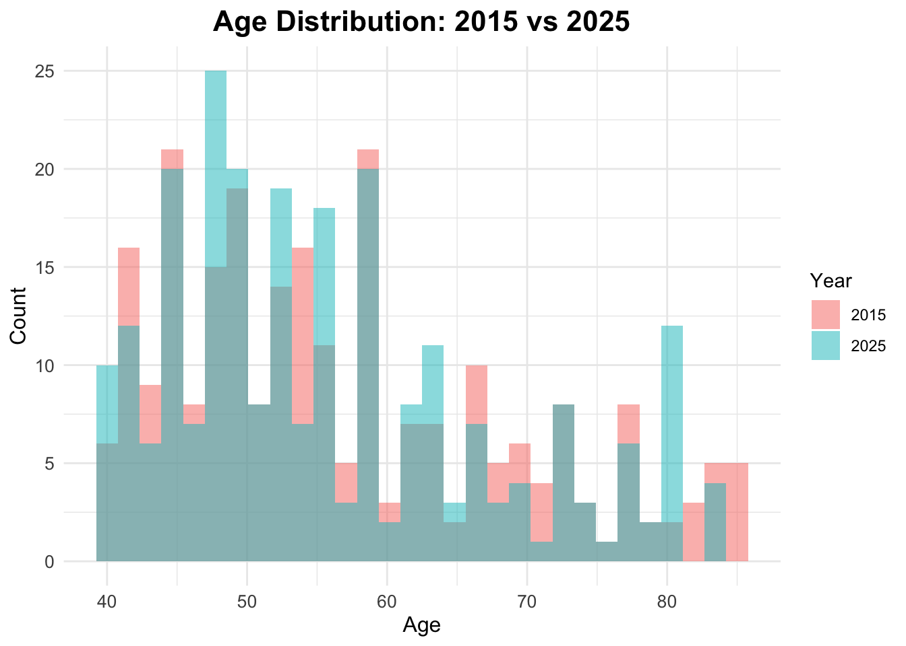
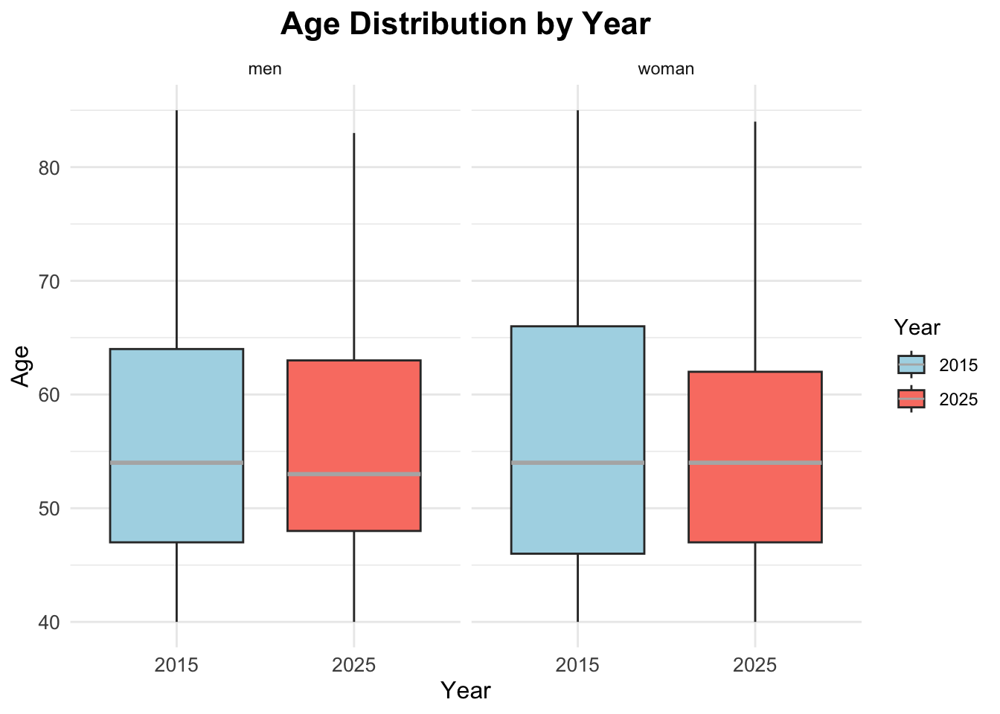
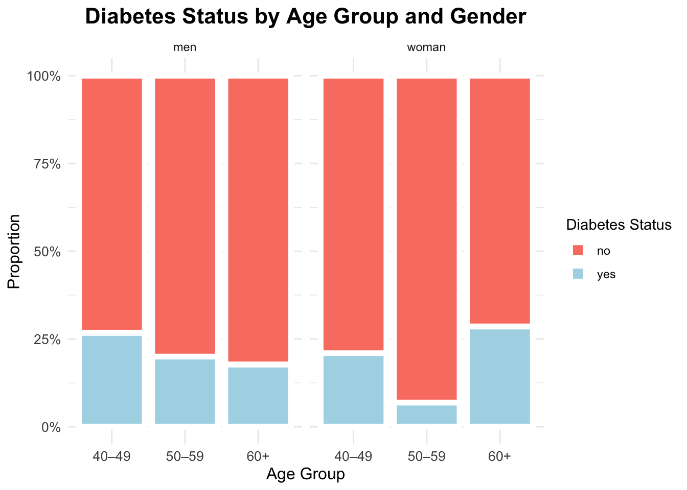
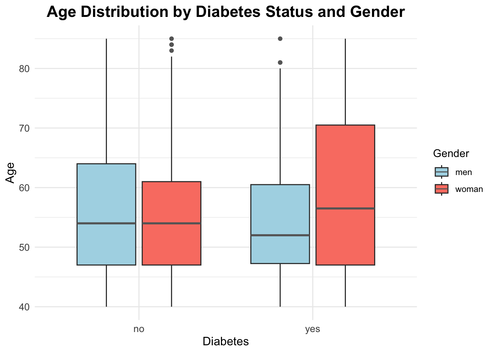
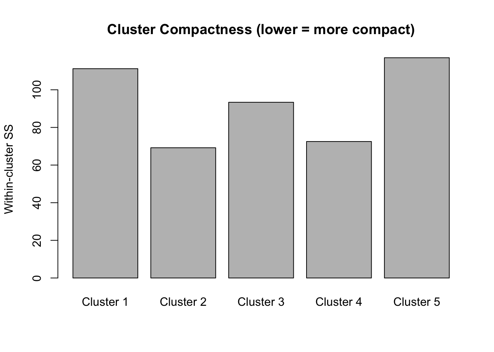
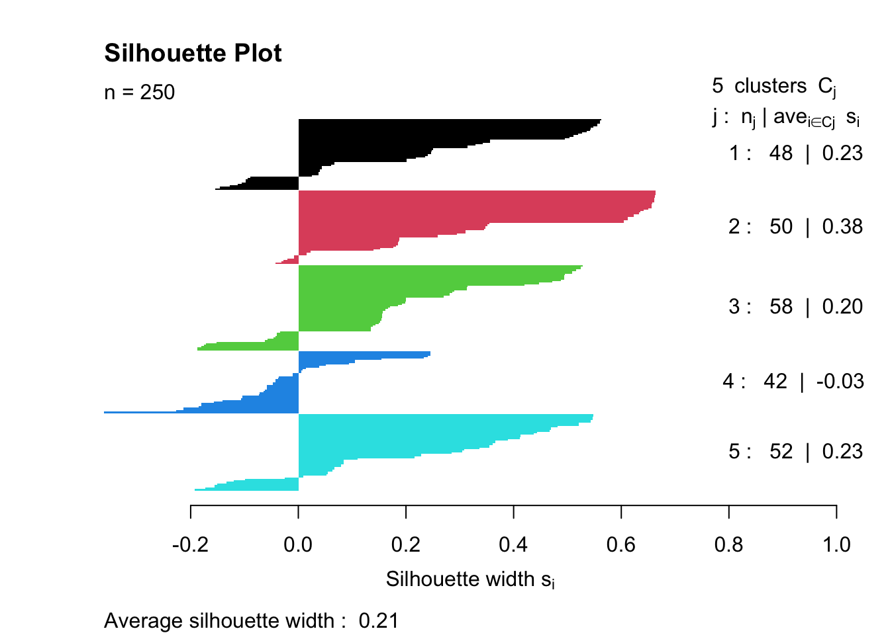

install.packages(c("readxl", "janitor", "tidyverse",
"scales", "crosstable",
"vcd", "DescTools",
"cluster","clustMixType"))From Basics to Advanced Health Analytics: Exploring Diabetes Data
An Exploratory Data Analysis (EDA) Tutorial
Tutorials
EDA
Diabetes
Clustering
This tutorial demonstrates exploratory data analysis (EDA) techniques on a simulated diabetes dataset for the years 2015 and 2025, covering data import, pre-processing, visualization, summary statistics, prevalence calculation, and statistical inference.
Overview
In this session, we perform an exploratory data analysis on a simulated diabetes dataset for 2015 and 2025. The dataset used in this tutorial is simulated, this means that the 2015 and 2025 data are not real patient records and are not drawn from GBD estimates or surveillance systems. Instead, they consist of synthetic data designed to resemble realistic diabetes patterns over time, including changes in prevalence, laboratory measurements, and population structure.
The use of simulated data allows the analysis to focus on methodology, workflow, and interpretation, without privacy constraints or data access limitations. All results should therefore be interpreted as illustrative examples of analytical techniques rather than as epidemiological estimates.
To explore how diabetes prevalence and characteristics vary over time and across populations, in this tutorial we will cover:
- Data Import
- Pre-processing
- Exploratory Data Visualization (EDA)
- Summary Statistics
- Prevalence Calculation
- Qualitative Statistical Inference
Why Diabetes?
Diabetes is a chronic health condition that affects how the body turns food into energy (blood glucose). It includes Type 1, Type 2, and gestational diabetes. The dataset used in this analysis contains information on individuals’ diabetes status, laboratory measurements (such as HbA1c levels), demographic information (age, sex, country), and other health-related variables.
At the population level, diabetes is a major contributor to illness (morbidity) and premature death (mortality). Classified as a non-communicable disease (NCD), it is associated with various complications, including cardiovascular disease, kidney failure, and neuropathy.
Research in Context
The Global Burden of Disease (GBD) study often identifies diabetes as a key driver of global health loss. According to GBD 2023 estimates, approximately 561 million people were living with diabetes worldwide in 2023, which is roughly \(7\%\) of the world’s population (561 million out of \(~8\) billion).1 In the same year, diabetes accounted for about 90.2 million disability-adjusted life years (DALYs) globally, representing approximately \(3.2\%\) of total global DALYs. Diabetes also contributed substantially to non-fatal health loss, with an estimated 44.2 million years lived with disability (YLDs) in 2023, representing about \(4.5\%\) of all global YLDs.2
From an analytical perspective, diabetes is commonly studied using measures such as prevalence rates, risk factors, and associations with other health conditions. Typical statistical tools include descriptive statistics, hypothesis testing (e.g., chi-square tests for categorical variables) for group comparisons, and exploratory methods such as clustering, regression analysis, and, in some settings, survival analysis.
Research Questions
To focus the analysis, we begin by defining the research questions addressed in this tutorial:
- Has the prevalence of diabetes changed significantly between 2015 and 2025?
- Does the prevalence of diabetes differ significantly between countries in the year 2025?
Packages
Before we start, we load a small set of packages.
Install Required Packages
Load Required Libraries
# Packages for Data Manipulation and Visualization
library(readxl) # For read_excel()
library(janitor) # For clean_names()
library(tidyverse) # For data manipulation and visualization
# tidyverse::tidyverse_packages()
library(scales) # For scale_y_continuous(labels = scales::percent)
library(crosstable) # For crosstable()
# Packages for Clustering
library(vcd) # For assocstats()
library(DescTools) # For CramerV()
library(cluster) # For data manipulation
library(clustMixType) # For k-prototypes clusteringData Import
Data are stored in one Excel file with two sheets: one for 2015 and one for 2025. We read each sheet into R and clean the column names so they are consistent and easy to type.
We use the read_excel function from the readxl package to read the data and the clean_names function from the janitor package to clean the column names.
path <- "data/diabetes_study_filled_NEW.xlsx"
d2015 <- readxl::read_excel(path,
sheet = "2015")
d2025 <- readxl::read_excel(path,
sheet = "2025") Pre-processing
The pre-processing phase is crucial for ensuring the quality and integrity of the data before conducting any analysis. Data are often messy and may contain inconsistencies, missing values, or irrelevant information that can affect the results of the analysis.
Data Manipulation
Combine data for comparative analyses by year is straightforward, we stack the two datasets into a single table and add a year column. This is data manipulation; we merge the two datasets from 2015 and 2025 into a single dataset, adding a new column to indicate the year of each observation.
In particular, we use the bind_rows function from the dplyr package to stack the two datasets vertically, and the mutate function to create a new column called year.
data_raw <- bind_rows(
d2015 %>% mutate(year = 2015),
d2025 %>% mutate(year = 2025)) %>%
janitor::clean_names()Data Inspection
The first step is to check the initial structure of the data and identify any missing values. We can use the head function to view the first few rows of the dataset.
# Checking initial structure
head(data_raw)# A tibble: 6 × 9
year country age sex bmi_cat sdi lab_hba1c diabetes_self_report
<dbl> <chr> <dbl> <chr> <chr> <chr> <dbl> <chr>
1 2015 Brazil 42 woman Obesity Interm… 4.9 no
2 2015 Brazil 64 woman Normal weight Interm… 6.1 no
3 2015 Brazil 82 woman Obesity Interm… 4.8 no
4 2015 Brazil 55 woman Normal weight Interm… 6 no
5 2015 Brazil 59 woman Underweight Interm… 5.6 no
6 2015 Brazil 42 men Normal weight Interm… 6.3 no
# ℹ 1 more variable: gestational_diabetes <chr>Then, we perform data inspection with the str or glimpse functions to understand the data types and structure of each variable. Both functions provide a concise summary of the dataset, including the number of observations, variables, and their respective data types.
glimpse(data_raw)Rows: 500
Columns: 9
$ year <dbl> 2015, 2015, 2015, 2015, 2015, 2015, 2015, 2015, 2…
$ country <chr> "Brazil", "Brazil", "Brazil", "Brazil", "Brazil",…
$ age <dbl> 42, 64, 82, 55, 59, 42, 54, 51, 73, 66, 54, 65, 4…
$ sex <chr> "woman", "woman", "woman", "woman", "woman", "men…
$ bmi_cat <chr> "Obesity", "Normal weight", "Obesity", "Normal we…
$ sdi <chr> "Intermediate", "Intermediate", "Intermediate", "…
$ lab_hba1c <dbl> 4.9, 6.1, 4.8, 6.0, 5.6, 6.3, 5.2, 5.8, 6.2, 6.0,…
$ diabetes_self_report <chr> "no", "no", "no", "no", "no", "no", "no", "no", "…
$ gestational_diabetes <chr> "no", "no", "no", "no", "no", "no", "no", "no", "…Handling Missing Values
Next, we check for missing values (NA) with is.na function. This function returns a logical matrix indicating the presence of missing values in the dataset. To count the number of missing values in each column, we can use the colSums function in combination with is.na.
# Checking missing values (NA)
colSums(is.na(data_raw)) year country age
0 0 0
sex bmi_cat sdi
0 0 0
lab_hba1c diabetes_self_report gestational_diabetes
0 0 0 There aren’t missing values in the dataset, but if there were, we could handle them using various strategies such as imputation, removal, or flagging, depending on the nature and extent of the missing data.
NoteQuestion
How would you handle missing values in a dataset? What strategies would you consider?
Creating Derived Variables
Data are usually not in the exact format needed for analysis. Therefore, we create new variables based on existing ones to facilitate the analysis. We are looking at making comparisons between two years to see how diabetes level changes along the time.
In this case, we create three derived variables:
- Laboratory-defined diabetes (\(HbA1c ≥ 6.5\))
- Total diabetes (self-report OR laboratory, excluding gestational diabetes)
- Age groups (set of age bands to support grouped summaries)
This step involves using the mutate function from the dplyr package to create new columns based on conditions applied to existing columns. And we use the if_else and case_when functions to define the logic for these new variables.
df_diabetes <- data_raw %>%
mutate(
# Laboratory-defined diabetes
diabetes_lab = if_else(lab_hba1c >= 6.5,
"yes", "no",
missing = NA_character_),
# Total diabetes (self-report OR laboratory, excluding gestational diabetes)
diabetes_total = case_when(
gestational_diabetes == "yes" ~ "no",
diabetes_self_report == "yes" | diabetes_lab == "yes" ~ "yes",
TRUE ~ "no"),
# Age groups
age_group = case_when(
age < 50 ~ "40–49",
age < 60 ~ "50–59",
TRUE ~ "60+")
)Exploratory data Analysis (EDA)
Exploratory Data Analysis (EDA) is a crucial step in understanding the underlying patterns, relationships, and distributions within a dataset. It involves using various statistical and graphical techniques to summarize and visualize the data. EDA helps to identify potential issues, outliers, and trends that may inform subsequent analyses or modelling efforts.
Distribution plot for HbA1c (2015 only)
Let’s visualize the distribution of HbA1c levels for the year 2015 using a histogram combined with a density plot. This will help us understand the spread and central tendency of HbA1c values in that year.
ggplot(data = d2015,
aes(x = lab_hba1c)) +
geom_histogram(aes(y = after_stat(density)),
bins = 30,
fill = "lightblue",
color = "grey70") +
geom_density(color = "darkblue",
linewidth = 1) +
labs(title = "HbA1c Distribution (2015)",
x = "HbA1c (%)",
y = "Density") 
We can see that the distribution of HbA1c levels in 2015 is right-skewed, with a peak around \(5-6\%\). This indicates that most individuals had HbA1c levels within the normal range, but there is a tail of higher values indicating some individuals with elevated HbA1c levels.
HbA1c distribution in both years
To compare the distribution of HbA1c levels between 2015 and 2025, we can create a density plot that overlays the distributions for both years. This will allow us to visually assess any changes in HbA1c levels over time.
df_diabetes %>%
ggplot(aes(x = lab_hba1c,
fill = as.factor(year))) +
geom_density(alpha = 0.5,
linewidth = 0.2) +
labs(title = "HbA1c Distribution — 2015 vs 2025",
x = "HbA1c (%)",
y = "Density",
fill = "Year")
Age distribution by year
To check the age distribution for both years, we can create overlapping histograms. This will help us visualize how the age distribution of the population has changed from 2015 to 2025.
ggplot(data = df_diabetes,
mapping = aes(x = age,
fill = factor(year))) +
geom_histogram(position = "identity",
color = "grey80",
alpha = 0.5, bins = 30) +
labs(title = "Age Distribution: 2015 vs 2025",
fill = "Year",
x = "Age",
y = "Count")
Age Boxplots
To further explore the age distribution by year and gender (sex), we can create boxplots. Boxplots provide a visual summary of the distribution, median, quartiles, and potential outliers for age across different years and genders.
ggplot(df_diabetes,
aes(x = factor(year), y = age,
fill = factor(year))) +
geom_boxplot(median.color = "grey70",) +
scale_fill_manual(values = c("2015" = "lightblue",
"2025" = "salmon")) +
facet_wrap(~sex) +
labs(title = "Age Distribution by Year",
x = "Year",
y = "Age",
fill = "Year") 
This plot shows the age distribution for both years separately for males and females. We can observe any shifts in median age or variability between the two years and across genders. We do not have outliers in this dataset.
Summary Statistics
Now that we have explored the data visually, we can compute some summary statistics to quantify key characteristics of the dataset, and compare them across the two years.
df_diabetes %>%
summarise(
n = n(),
age_mean = mean(age, na.rm = TRUE),
age_sd = sd(age, na.rm = TRUE),
hba1c_mean = mean(lab_hba1c, na.rm = TRUE),
hba1c_sd = sd(lab_hba1c, na.rm = TRUE)
) %>%
round(2) %>% # Round to 2 decimal places
t() # Transpose for better layout [,1]
n 500.00
age_mean 56.34
age_sd 11.86
hba1c_mean 5.96
hba1c_sd 0.92The results show the overall mean and standard deviation for age and HbA1c levels across the entire dataset, without stratifying by year.
The mean age is approximately 56 years, with a standard deviation of about 12 years, indicating a middle-aged population with some variability in age. The mean HbA1c level is around \(6.2\%\), with a standard deviation of about \(1.5\%\), suggesting that, on average, the population has HbA1c levels slightly above the normal range (typically \(<5.7\%\) for non-diabetic individuals), with considerable variability.
Comparisons by Year
To compare these statistics by year, we can use the group_by function to group the data by the year variable before summarising.
df_diabetes %>%
group_by(year) %>%
summarise(
n = n(),
age_mean = mean(age, na.rm = TRUE),
hba1c_mean = mean(lab_hba1c, na.rm = TRUE)
)# A tibble: 2 × 4
year n age_mean hba1c_mean
<dbl> <int> <dbl> <dbl>
1 2015 250 56.7 5.87
2 2025 250 56.0 6.05Prevalence Calculation
To calculate the prevalence of diabetes for each year, we can use the group_by and summarise functions to compute the mean of the binary indicator for diabetes status.
prev_diabetes <- df_diabetes %>%
group_by(year, diabetes_total) %>%
summarise(n = n(), .groups = "drop") %>%
group_by(year) %>%
mutate(prop = n / sum(n))
prev_diabetes# A tibble: 4 × 4
# Groups: year [2]
year diabetes_total n prop
<dbl> <chr> <int> <dbl>
1 2015 no 212 0.848
2 2015 yes 38 0.152
3 2025 no 188 0.752
4 2025 yes 62 0.248prev_summary <- df_diabetes %>%
group_by(year) %>%
summarise(prev_diabetes = mean(diabetes_total == "yes",
na.rm=TRUE))
prev_summary# A tibble: 2 × 2
year prev_diabetes
<dbl> <dbl>
1 2015 0.152
2 2025 0.248Prevalence Table with Confidence Intervals
To calculate prevalence with confidence intervals, we can use the prop.test function within a custom summarise operation.
prev_ci <- df_diabetes %>%
group_by(year) %>%
summarise(
n = n(),
cases = sum(diabetes_total == "yes", na.rm = TRUE),
prev = cases / n,
ci_lower = prop.test(cases, n)$conf.int[1],
ci_upper = prop.test(cases, n)$conf.int[2]
)
prev_ci# A tibble: 2 × 6
year n cases prev ci_lower ci_upper
<dbl> <int> <int> <dbl> <dbl> <dbl>
1 2015 250 38 0.152 0.111 0.204
2 2025 250 62 0.248 0.197 0.307Visualize diabetes prevalence by year
To visualize diabetes prevalence by year, we can create a bar plot with the errorbars representing the confidence intervals. This plot will show the proportion of individuals with diabetes for each year.
ggplot(prev_ci,
aes(x = factor(year),
y = prev,
fill = factor(year))) +
geom_col() +
geom_errorbar(aes(ymin = ci_lower,
ymax = ci_upper),
width = 0.2) +
scale_y_continuous(labels = scales::percent) +
scale_fill_manual(values = c("2015" = "lightblue",
"2025" = "salmon")) +
labs(title = "Diabetes Prevalence by Year",
x = "Year",
y = "Prevalence (%)",
fill = "Year")
This barplot shows the prevalence of diabetes for each year, along with the 95% confidence intervals. We can visually assess any changes in prevalence between 2015 and 2025.
Interaction
To explore the interaction between gender, age, and diabetes status, we can create a faceted bar plot. This plot will show the distribution of diabetes status across different age groups, separated by gender.
ggplot(df_diabetes,
aes(x = age_group,
fill = diabetes_total)) +
geom_bar(position = "fill",
color = "white",
linewidth = 2) +
scale_y_continuous(labels = scales::percent) +
scale_fill_manual(values = c("yes" = "lightblue",
"no" = "salmon")) +
labs(title = "Diabetes Status by Age Group and Gender",
x = "Age Group",
y = "Proportion",
fill = "Diabetes Status") +
facet_wrap(~sex)
Interaction between gender, age and diabetes
ggplot(df_diabetes,
aes(x = diabetes_total, y = age,
fill = sex)) +
geom_boxplot(median.color = "gray40",
outlier.color = "gray40") +
scale_fill_manual(values = c("men" = "lightblue",
"woman" = "salmon")) +
labs(title = "Age Distribution by Diabetes Status and Gender",
x = "Diabetes",
y = "Age",
fill = "Gender") 
Here, we can observe how the proportion of individuals with diabetes varies across age groups for both men and women. Additionally, the boxplot shows the age distribution for individuals with and without diabetes, separated by gender.
Qualitative Statistical Inference
To answer our research questions regarding diabetes prevalence, we will use the Chi-Square Test of Independence. This test is appropriate for categorical data and helps us determine whether there is a significant association between two categorical variables.
Question 1: The prevalence of diabetes changed significantly between 2015 and 2025?
Chi-square Test for Year and Diabetes Status
table_year <- table(df_diabetes$year,
df_diabetes$diabetes_total)
table_year
no yes
2015 212 38
2025 188 62chi_year <- chisq.test(table_year)
chi_year
Pearson's Chi-squared test with Yates' continuity correction
data: table_year
X-squared = 6.6125, df = 1, p-value = 0.01013The p-value is below 0.05, so we reject the null hypothesis and conclude that prevalence differs between 2015 and 2025 in this dataset.
chi_year$expected
no yes
2015 200 50
2025 200 50# Standardized Residuals
res_year <- chi_year$stdres
res_year
no yes
2015 2.683282 -2.683282
2025 -2.683282 2.683282Question 2: Will the prevalence of diabetes differ significantly between countries in the year 2025?
Chi-square Test for Country and Diabetes Status in 2025
df_diabetes_2025 <- df_diabetes %>% filter(year == 2025)Contingency table for countries and diabetes
tab_2025 <- table(df_diabetes_2025$country,
df_diabetes_2025$diabetes_total)
tab_2025
no yes
Brazil 42 25
China 39 11
Italy 40 10
South Africa 27 6
USA 40 10chi_2025 <- chisq.test(tab_2025)
chi_2025
Pearson's Chi-squared test
data: tab_2025
X-squared = 7.8461, df = 4, p-value = 0.09738The p-value is greater than 0.05. Therefore, we fail to reject the null hypothesis and conclude that there is no statistically significant difference in diabetes prevalence between countries in 2025.
chi_2025$expected
no yes
Brazil 50.384 16.616
China 37.600 12.400
Italy 37.600 12.400
South Africa 24.816 8.184
USA 37.600 12.400# Standardized Residuals
residuals <- chi_2025$stdres
round(residuals, 2)
no yes
Brazil -2.77 2.77
China 0.51 -0.51
Italy 0.88 -0.88
South Africa 0.94 -0.94
USA 0.88 -0.88Identify where the greatest contribution lies:
mosaicplot(tab_2025,
main = "Mosaic Plot — Diabetes by Country (2025)",
color = TRUE, las = 1)
NoteInterpretation
Interpretation: We fail to reject the null hypothesis. There is no statistically significant evidence that diabetes prevalence differs between countries in 2025 at the 5% significance level.
Although some countries show larger deviations from expected counts, these differences are not strong enough, overall, to conclude that prevalence differs significantly across countries.
K-prototypes Clustering
In this final analytical step, we explore whether individuals in the 2025 dataset can be grouped into distinct profiles based on a combination of clinical and demographic characteristics. Rather than focusing on hypothesis testing, this section introduces unsupervised learning as an exploratory tool to uncover structure in the data.
Clustering is particularly useful in public health settings when the goal is to:
- identify subgroups with similar risk profiles,
- explore heterogeneity within a population,
- generate hypotheses for targeted interventions.Because our dataset contains both numeric and categorical variables, we use the k-prototypes algorithm, which is specifically designed for mixed-type data.
Why k-prototypes?
Traditional clustering methods such as k-means only work with numeric variables, while k-modes are limited to categorical data. The k-prototypes algorithm combines both approaches:
- Euclidean distance is used for numeric variables,
- matching dissimilarity is used for categorical variables,
- a tuning parameter ($\lambda$) balances the contribution of each type.This makes k-prototypes well suited for health datasets that mix laboratory values (e.g. HbA1c) with demographic or clinical categories (e.g. sex, BMI group, age band).
Data Preparation for Clustering
We restrict the clustering analysis to observations from 2025, as the aim is to characterise the most recent population snapshot rather than temporal change.
str(df_diabetes_2025)tibble [250 × 12] (S3: tbl_df/tbl/data.frame)
$ year : num [1:250] 2025 2025 2025 2025 2025 ...
$ country : chr [1:250] "Brazil" "Brazil" "Brazil" "Brazil" ...
$ age : num [1:250] 44 83 45 48 48 47 55 66 57 66 ...
$ sex : chr [1:250] "woman" "men" "woman" "men" ...
$ bmi_cat : chr [1:250] "Normal weight" "Overweight" "Obesity" "Normal weight" ...
$ sdi : chr [1:250] "Intermediate" "Intermediate" "Intermediate" "Intermediate" ...
$ lab_hba1c : num [1:250] 6 6.1 5.8 5.9 5.3 6.3 8.8 5.4 5.3 6.4 ...
$ diabetes_self_report: chr [1:250] "no" "no" "no" "yes" ...
$ gestational_diabetes: chr [1:250] "no" "no" "no" "no" ...
$ diabetes_lab : chr [1:250] "no" "no" "no" "no" ...
$ diabetes_total : chr [1:250] "no" "no" "no" "yes" ...
$ age_group : chr [1:250] "40–49" "60+" "40–49" "40–49" ...Before clustering, variables must be correctly typed. Numeric variables should remain numeric, while categorical variables must be encoded as factors.
cluster_data_2025 <- df_diabetes_2025 %>%
select(-year)%>%
mutate(across(where(is.character), as.factor))
str(cluster_data_2025)tibble [250 × 11] (S3: tbl_df/tbl/data.frame)
$ country : Factor w/ 5 levels "Brazil","China",..: 1 1 1 1 1 1 1 1 1 1 ...
$ age : num [1:250] 44 83 45 48 48 47 55 66 57 66 ...
$ sex : Factor w/ 2 levels "men","woman": 2 1 2 1 1 2 2 1 1 2 ...
$ bmi_cat : Factor w/ 4 levels "Normal weight",..: 1 3 2 1 2 2 2 3 2 2 ...
$ sdi : Factor w/ 3 levels "High","Intermediate",..: 2 2 2 2 2 2 2 2 2 2 ...
$ lab_hba1c : num [1:250] 6 6.1 5.8 5.9 5.3 6.3 8.8 5.4 5.3 6.4 ...
$ diabetes_self_report: Factor w/ 2 levels "no","yes": 1 1 1 2 1 2 1 1 1 2 ...
$ gestational_diabetes: Factor w/ 2 levels "no","yes": 1 1 1 1 1 1 1 1 1 1 ...
$ diabetes_lab : Factor w/ 2 levels "no","yes": 1 1 1 1 1 1 2 1 1 1 ...
$ diabetes_total : Factor w/ 2 levels "no","yes": 1 1 1 2 1 2 2 1 1 2 ...
$ age_group : Factor w/ 3 levels "40–49","50–59",..: 1 3 1 1 1 1 2 3 2 3 ...At this stage, the dataset contains a mixture of numeric and categorical features suitable for k-prototypes clustering.
Checking Redundancy and Association Between Variables
Clustering can be distorted if highly redundant variables are included. We therefore assess association within numeric variables and dependence among categorical variables.
Numeric Correlation (Pearson)
cluster_data_2025 %>%
select_if(is.numeric) %>%
cor() age lab_hba1c
age 1.000000000 0.008397291
lab_hba1c 0.008397291 1.000000000Age and HbA1c show little correlation, so both can be retained. However, age_group is derived directly from age, so age is removed later to avoid duplicating the same information. So we will drop age from the clustering dataset.
features_num <- c(#"age",
"lab_hba1c")Categorical Association (Cramér’s V)
For categorical variables, we use Cramér’s V, a normalized measure derived from the chi-square statistic:
\[ V = \sqrt{\frac{\chi^2 / n}{\min(k - 1, r - 1)}} \tag{1}\]
Where:
- (\(\chi^2\)) is the Chi-square statistic
- (\(n\)) is the total number of observations
- (\(k\)) is the number of categories in one variable
- (\(r\)) is the number of categories in the other variable
Cramer V is a measure of association between two nominal categorical variables. It ranges from 0 (no association) to 1 (perfect association). It is based on the Chi-square statistic and is useful for understanding the strength of association between categorical variables.
The inventor of Cramér’s V, Harald Cramér, did not specify strict cut-offs for interpreting the values. However, in practice, researchers often use the following guidelines to interpret the strength of association:
- 0 to 0.1: Negligible association
- 0.1 to 0.3: Weak association
- 0.3 to 0.5: Moderate association
- 0.5 to 1.0: Strong association
In this case, we will identify pairs of categorical variables with Cramér’s V less than or equal to 0.5, indicating weak to moderate associations.
We first examine the relationship between country and sdi, which are conceptually related using the assocstats() function from the vcd package:
vcd::assocstats(table(cluster_data_2025$country, cluster_data_2025$sdi))$cramer[1] 0.8998341Or, we can even use the CramerV() function from the DescTools package:
DescTools::CramerV(cluster_data_2025$country, cluster_data_2025$sdi)[1] 0.8998341Both packages show a value of 0.9, indicating a high association between country and SDI. The high association suggests that including both variables may overweight the same socioeconomic information. However, association with other categorical variables is weaker, so this decision is not automatic and requires judgement.
Test all pairs of categorical features
To examine this systematically, we compute Cramér’s V for all pairs of categorical variables setting up a function to compute Cramér’s V for any two categorical variables:
cramers_v <- function(x, y) CramerV(table(x, y))Extract the names of all categorical features:
cluster_data_2025 %>%
select(where(is.factor)) %>%
names()[1] "country" "sex" "bmi_cat"
[4] "sdi" "diabetes_self_report" "gestational_diabetes"
[7] "diabetes_lab" "diabetes_total" "age_group" We focus on a subset of categorical features for clarity:
features_cat <- c("sex",
"bmi_cat",
#"country",
#"sdi",
"age_group")Then we use the expand_grid function to create all possible pairs of categorical features, compute Cramér’s V for each pair, and filter for weak to moderate associations (Cramér’s V <= 0.5):
expand_grid(feature1 = features_cat,
feature2 = features_cat) %>%
filter(feature1 < feature2) %>% # keep unique pairs only
rowwise() %>%
mutate(cramers_v = cramers_v(
cluster_data_2025[[feature1]],
cluster_data_2025[[feature2]])) %>%
# Filter for Cramér's V <= 0.5 to identify weak to moderate associations
filter(cramers_v <= 0.5) %>%
arrange(desc(cramers_v)) -> cramers_df
cramers_df# A tibble: 3 × 3
# Rowwise:
feature1 feature2 cramers_v
<chr> <chr> <dbl>
1 bmi_cat sex 0.124
2 age_group sex 0.0698
3 age_group bmi_cat 0.0578This confirms that the retained categorical variables are not strongly redundant.
Data Quality Checks: Outliers and Rare Categories
Before clustering, we check:
- outliers in numeric variables,
- imbalanced categories in categorical variables.cluster_data_2025 %>%
select(lab_hba1c) %>%
ggplot() +
geom_boxplot(aes(x = lab_hba1c)) 
We can see the presence of outliers in lab_hba1c variable. To handle these outliers , we can perform a technique called winsorization, which involves capping extreme values to reduce their impact on the analysis. In this case, we will cap the values at the 1st and 99th percentiles.
The extreme values in lab_hba1c can disproportionately influence the clustering results.
summary(cluster_data_2025$lab_hba1c) Min. 1st Qu. Median Mean 3rd Qu. Max.
4.800 5.400 5.800 6.052 6.300 8.900 The maximum value of lab_hba1c before winsorization is 8.9.
Then we calculate the upper whisker value using the interquartile range (IQR) method.
Q1 <- quantile(cluster_data_2025$lab_hba1c, 0.25)
Q3 <- quantile(cluster_data_2025$lab_hba1c, 0.75)
IQR_val <- Q3 - Q1
upper_whisker <- Q3 + 1.5 * IQR_valIn summary, winsorizing the lab_hba1c variable helps to mitigate the influence of extreme outliers on the clustering results.
Winsorization of lab_hba1c
# Save the original values
cluster_data_2025$lab_hba1c_original <- cluster_data_2025$lab_hba1cWe use pmin() function to force the lab_hba1c outliers to equal the upper whisker value, it selects the minimum out of: the existing lab_hba1c value and the upper whisker value.
cluster_data_2025$lab_hba1c <- pmin(cluster_data_2025$lab_hba1c, upper_whisker)After winsorization - where did the outliers go?
boxplot(cluster_data_2025$lab_hba1c,
main = "lab_hba1c – After Winsorization",
horizontal = TRUE)
Unbalanced categorical features
We check the distribution of categories in each categorical variable to ensure there are no extremely rare categories that could distort clustering.
cat_balance <- cluster_data_2025 %>%
select_if(is.factor) %>%
pivot_longer(cols = everything(),
names_to = "variable",
values_to = "category") %>%
count(variable, category, name = "n") %>%
group_by(variable) %>%
mutate(pct = round(100 * n / sum(n), 1),
is_rare = (n / sum(n)) < 0.05 ) %>%
ungroup() %>%
arrange(variable, desc(n))
cat_balance# A tibble: 25 × 5
variable category n pct is_rare
<chr> <fct> <int> <dbl> <lgl>
1 age_group 40–49 88 35.2 FALSE
2 age_group 50–59 87 34.8 FALSE
3 age_group 60+ 75 30 FALSE
4 bmi_cat Normal weight 102 40.8 FALSE
5 bmi_cat Overweight 78 31.2 FALSE
6 bmi_cat Obesity 46 18.4 FALSE
7 bmi_cat Underweight 24 9.6 FALSE
8 country Brazil 67 26.8 FALSE
9 country China 50 20 FALSE
10 country Italy 50 20 FALSE
# ℹ 15 more rowsNo categories are extremely rare (i.e., less than 5% of total), so we can retain all categorical variables for clustering.
Scaling Numeric Variables and Final Variable Selection
Why scaling? Scaling numeric variables ensures that they contribute equally to the distance calculations used in clustering. Without scaling, variables with larger ranges can dominate the distance metric, leading to biased clustering results.
We then retain the final set of variables for clustering and standardise the numeric input.
cluster_data_2025 <- cluster_data_2025 %>%
select(lab_hba1c,
sex,
age_group,
bmi_cat) %>%
# here is where scaling happens
mutate(lab_hba1c = as.numeric(scale(lab_hba1c)))Choosing the Number of Clusters
We use the elbow method, examining how within-cluster variation decreases as the number of clusters increases. What we do here is run the k-prototypes algorithm for a range of cluster numbers (k = 2 to 10) and record the total within-cluster sum of squares (WSS) for each k. We use the map_dbl function from the purrr package to map over the range of k values and store the WSS results. And the kproto function from the clustMixType package to perform k-prototypes clustering on the prepared dataset for 2025.
set.seed(123)
kproto_wss_2025 <- purrr::map_dbl(2:10, function(k) {
kpres <- kproto(cluster_data_2025,
k,
verbose = FALSE)
kpres$tot.withinss
})And plot the WSS values to identify the “elbow” point where adding more clusters yields diminishing returns in reducing WSS.
plot(2:10, kproto_wss_2025, type = "b",
xlab = "Number of clusters (k)",
ylab = "Total within-cluster sum of squares",
main = "Elbow Method (2025)")
Based on the elbow plot, we choose k = 5 as the optimal number of clusters.
optimal_k <- 5 # chosen from elbowRun K-prototypes Clustering
We use the kproto function again, but this time specifying the optimal number of clusters (k = 5) determined from the elbow method. We set a random seed for reproducibility, and configure the algorithm to run with 25 random starts and a maximum of 25 iterations per start to ensure convergence.
set.seed(123456789)
kp_model <- kproto(cluster_data_2025,
k = optimal_k,
nstart = 25,
iter.max = 25,
lambda = NULL,
verbose = FALSE)Add a cluster number (1 to 5) to each datapoint in the dataset:
cluster_data_2025$cluster <- kp_model$clusterInterpreting the Clusters
Key diagnostic outputs help assess clustering quality and interpretability:
kp_model$size # Number of points in each clusterclusters
1 2 3 4 5
48 50 58 42 52 Lambda balances numerical (Euclidean) vs categorical (matching) distance:
\[ \lambda =\sum{\frac{\text{(std_dev of numerical features)}}{\text{(n. numerical features)}}} \tag{2}\]
Calculate lambda manually to verify:
kp_model$lambda # Lambda value used[1] 1.614542The withinss values tell us how compact each cluster is. Lower is better, it means the patients in that cluster are more similar to each other.
kp_model$withinss[1] 72.60207 58.85312 94.89224 110.92214 85.94492# Compare cluster compactness
barplot(kp_model$withinss,
names.arg = paste("Cluster", 1:5),
ylab = "Within-cluster SS",
main = "Cluster Compactness (lower = more compact)")
The total within-cluster sum of squares represents the overall compactness. When we did the elbow plot, we were looking at how this total changes as we add more clusters. We want tight clusters without over-fragmenting our data.
kp_model$tot.withinss[1] 423.2145The cluster centres for categorical variables represent modal categories, while numeric centres reflect mean values.
kp_model$centers lab_hba1c sex age_group bmi_cat
1 -0.71955321 men 50–59 Overweight
2 -0.28653701 woman 50–59 Normal weight
3 -0.51599890 men 60+ Normal weight
4 1.84526774 men 40–49 Normal weight
5 0.02484799 woman 40–49 Overweightcluster_data_2025 %>%
group_by(cluster) %>%
summarise(
n = n(),
hba1c = round(mean(lab_hba1c), 1),
sex = names(which.max(table(sex))),
bmi_cat = names(which.max(table(bmi_cat))),
age = names(which.max(table(age_group)))
)# A tibble: 5 × 6
cluster n hba1c sex bmi_cat age
<int> <int> <dbl> <chr> <chr> <chr>
1 1 48 -0.7 men Overweight 50–59
2 2 50 -0.3 woman Normal weight 50–59
3 3 58 -0.5 men Normal weight 60+
4 4 42 1.8 men Normal weight 40–49
5 5 52 0 woman Overweight 40–49External Validation Using Diabetes Status
Although clustering is unsupervised, we can validate the result externally by checking whether clusters align with known diabetes status.
Add diabetes status back to cluster data:
cluster_data_2025$diabetes <- df_diabetes_2025$diabetes_totalchisq.test(table(cluster_data_2025$cluster, cluster_data_2025$diabetes))
Pearson's Chi-squared test
data: table(cluster_data_2025$cluster, cluster_data_2025$diabetes)
X-squared = 138.5, df = 4, p-value < 2.2e-16assocstats(table(cluster_data_2025$cluster, cluster_data_2025$diabetes)) X^2 df P(> X^2)
Likelihood Ratio 130.89 4 0
Pearson 138.50 4 0
Phi-Coefficient : NA
Contingency Coeff.: 0.597
Cramer's V : 0.744 Practical implication for your clustering workflow:
A Cramér’s V of 0.7443093 strongly suggests these two categorical variables carry overlapping information. If both are included in clustering, the algorithm may effectively double count the same underlying structure, increasing the weight of that dimension in cluster formation.
Cluster Quality: Silhouette Analysis
Silhouette analysis measures how similar an object is to its own cluster compared to other clusters. The silhouette value ranges from -1 to 1, where a value close to 1 indicates that the object is well clustered, a value of 0 indicates that the object is on or very close to the decision boundary between two neighboring clusters, and negative values indicate that the object may have been assigned to the wrong cluster.
dist_matrix <- cluster_data_2025 %>%
select(-cluster, -diabetes) %>%
cluster::daisy(metric = "gower")sil <- silhouette(kp_model$cluster, dist_matrix)
mean(sil[, 3])[1] 0.2102046plot(sil, col = 1:optimal_k,
border = NA,
main = "Silhouette Plot")
Key Clinical Insights
The k-prototypes clustering reveals clinically interpretable subgroups within the 2025 population, reflecting distinct metabolic profiles rather than arbitrary partitions.
Cluster 4 concentrates individuals with clearly elevated HbA1c levels (mean ≈ 8%), corresponding to the diagnosed diabetic population, although separation from neighbouring clusters is weaker than for some other groups.
Cluster 5 represents a pre-diabetic risk profile, characterised by younger individuals—predominantly women—who may benefit from early monitoring and preventive intervention.
Clusters 1–3 capture different non-diabetic phenotypes with broadly healthy metabolic profiles and varying demographic compositions.
Overall, the clustering distinguishes diabetic from non-diabetic individuals in a meaningful way, as supported by external validation using diabetes status, while also highlighting substantial overlap consistent with diabetes risk existing along a continuum rather than as discrete categories.
This analysis reinforces that diabetes risk is not uniform across the population but varies systematically with age, sex, and BMI, supporting the use of stratified screening and targeted pre ,considering that this data is simulated and not real-world, the clinical interpretations should be viewed as illustrative rather than definitive.
Bonus
Frequency Table for BMI Categories
crosstable(df_diabetes, by = "year",
cols = c("sex","diabetes_total",
"bmi_cat","country","sdi")) %>%
as_flextable() label | variable | year | |
|---|---|---|---|
2015 | 2025 | ||
sex | men | 125 (50.00%) | 125 (50.00%) |
woman | 125 (50.00%) | 125 (50.00%) | |
diabetes_total | no | 212 (53.00%) | 188 (47.00%) |
yes | 38 (38.00%) | 62 (62.00%) | |
bmi_cat | Normal weight | 95 (48.22%) | 102 (51.78%) |
Obesity | 56 (54.90%) | 46 (45.10%) | |
Overweight | 85 (52.15%) | 78 (47.85%) | |
Underweight | 14 (36.84%) | 24 (63.16%) | |
country | Brazil | 33 (33.00%) | 67 (67.00%) |
China | 66 (56.90%) | 50 (43.10%) | |
Italy | 34 (40.48%) | 50 (59.52%) | |
South Africa | 67 (67.00%) | 33 (33.00%) | |
USA | 50 (50.00%) | 50 (50.00%) | |
sdi | High | 100 (50.00%) | 100 (50.00%) |
Intermediate | 100 (50.00%) | 100 (50.00%) | |
Low | 50 (50.00%) | 50 (50.00%) | |
BMI Categories by Year
The distribution of BMI categories by year can be examined using counts and proportions.
df_diabetes %>%
count(year, bmi_cat) %>%
group_by(year) %>%
mutate(prop = n / sum(n))# A tibble: 8 × 4
# Groups: year [2]
year bmi_cat n prop
<dbl> <chr> <int> <dbl>
1 2015 Normal weight 95 0.38
2 2015 Obesity 56 0.224
3 2015 Overweight 85 0.34
4 2015 Underweight 14 0.056
5 2025 Normal weight 102 0.408
6 2025 Obesity 46 0.184
7 2025 Overweight 78 0.312
8 2025 Underweight 24 0.096Visualizing BMI Categories by Year
ggplot(data = df_diabetes,
aes(x = bmi_cat, fill = factor(year))) +
geom_bar(position = "dodge") +
labs(title = "BMI categories by year",
x = "BMI category",
y = "Count",
fill = "Year")
Proportional Distribution of BMI Categories by Year
ggplot(df_diabetes,
aes(x = bmi_cat, fill = factor(year))) +
geom_bar(position = "fill") +
scale_y_continuous(labels = scales::percent) +
labs(title = "BMI categories by year (proportions)",
x = "BMI category",
y = "Proportion",
fill = "Year")
From Basics to Advanced Health Analytics: Exploring Diabetes Data Principles of Data Analysis in R 2. Getting Started 1. Welcome 2. Getting Started 3. Data Analytics 3.1 Exploring Diabetes Data About Us /about.html https://rladiesrome.org/ https://github.com/rladiesrome 3. Data Analytics 3.1 Exploring Diabetes Data
Copyright © 2025 RLadiesRome Learning | RConsortium
Designer & Maintainer: Federica Gazzelloni
Powered by: Quarto & GitHub Pages | MIT License.

Alert - Course 1: Wednesday, 17 December 2025 at 18:00 CEST.
From Basics to Advanced Health Analytics: Exploring Diabetes Data From Basics to Advanced Health Analytics: Exploring Diabetes Data From Basics to Advanced Health Analytics: Exploring Diabetes Data This tutorial demonstrates exploratory data analysis (EDA) techniques on a simulated diabetes dataset for the years 2015 and 2025, covering data import, pre-processing, visualization, summary statistics, prevalence calculation, and statistical inference. This tutorial demonstrates exploratory data analysis (EDA) techniques on a simulated diabetes dataset for the years 2015 and 2025, covering data import, pre-processing, visualization, summary statistics, prevalence calculation, and statistical inference.
Global, regional, and national cascades of diabetes care, 2000–23: a systematic review and modelling analysis using findings from the Global Burden of Disease Study, Stafford, Lauryn K et al. The Lancet Diabetes & Endocrinology, Volume 13, Issue 11, 924 - 934 (https://doi.org/10.1016/S2213-8587(25)00217-7)↩︎
Burden of 375 diseases and injuries, risk-attributable burden of 88 risk factors, and healthy life expectancy in 204 countries and territories, including 660 subnational locations, 1990–2023: a systematic analysis for the Global Burden of Disease Study 2023 Hay, Simon I et al. The Lancet, Volume 406, Issue 10513, 1873 - 1922 (https://doi.org/10.1016/S0140-6736(25)01637-X)↩︎